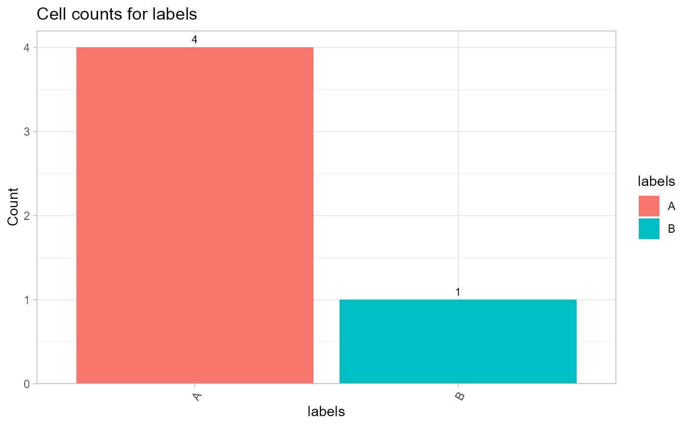
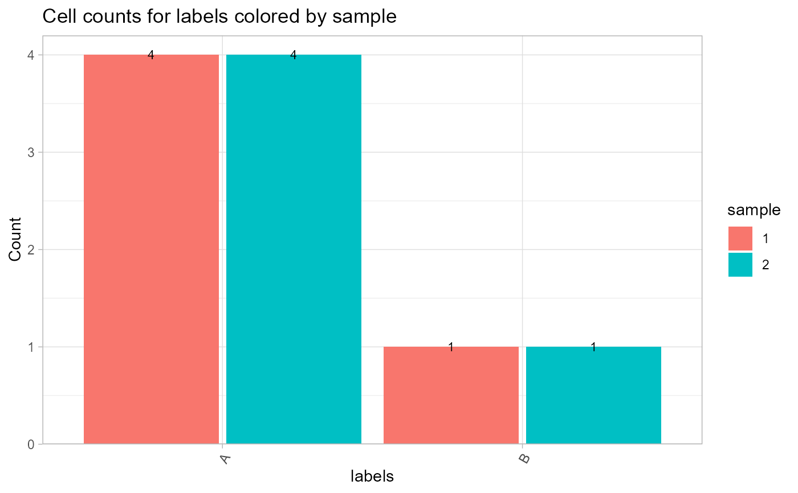
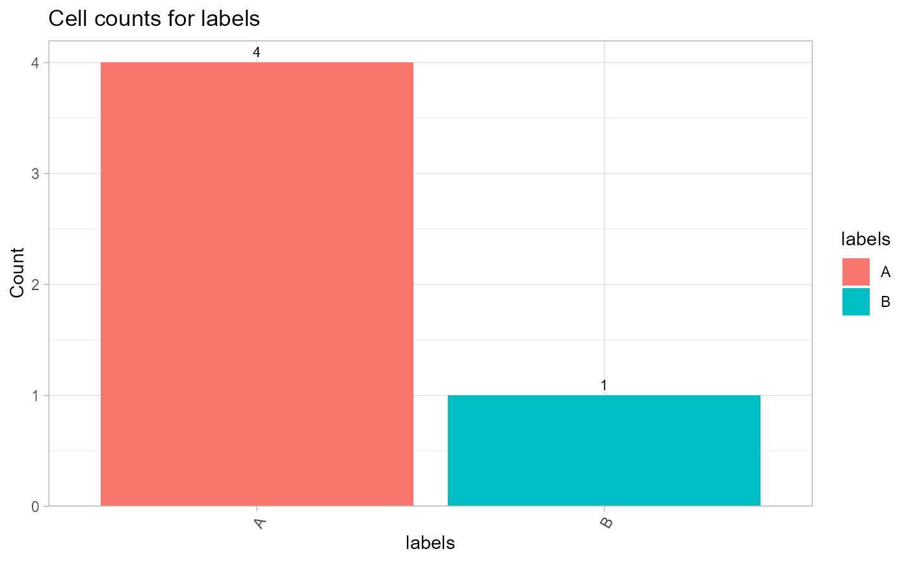
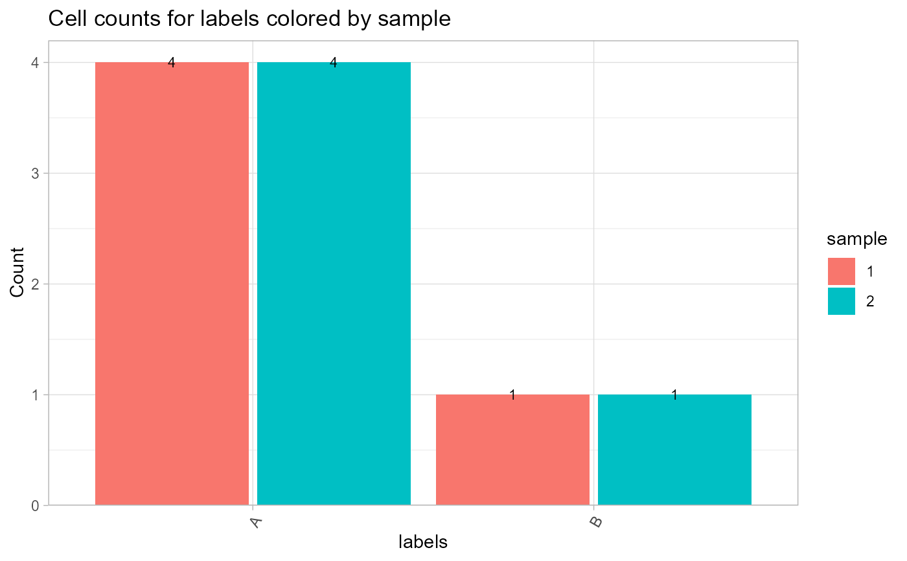

Plot cell counts per group
CellCountPlot.RdQC plot function used to get a quick overview of called cells in a Molecular Pixelation (MPX) or Proximity Network Assay (PNA) data set.
Usage
CellCountPlot(object, ...)
# S3 method for class 'data.frame'
CellCountPlot(
object,
group_by = NULL,
color_by,
show_count = TRUE,
flip_axes = FALSE,
as_frequency = FALSE,
stack = FALSE,
...
)
# S3 method for class 'Seurat'
CellCountPlot(
object,
group_by = NULL,
color_by,
show_count = TRUE,
flip_axes = FALSE,
as_frequency = FALSE,
stack = FALSE,
...
)Arguments
- object
A
data.frame-like object or aSeuratobject- ...
Not yet implemented
- group_by
A column in the object representing a 'character' or 'factor' to group data by
- color_by
A column in the object representing a 'character' or 'factor' to color data by
- show_count
Place the count on top of the bar or next to the bar if
flip_axes = TRUE- flip_axes
Flip the plot layout
- as_frequency
Plot frequencies instead of counts
- stack
Create a stacked bar plot. Only has an effect if a
group_byvariable is provided.
See also
Other QC-plots:
TauPlot()
Examples
library(pixelatorR)
# Load example data as a Seurat object
pxl_file <- minimal_mpx_pxl_file()
seur_obj <- ReadMPX_Seurat(pxl_file)
#> ✔ Created a 'Seurat' object with 5 cells and 80 targeted surface proteins
seur_obj
#> An object of class Seurat
#> 80 features across 5 samples within 1 assay
#> Active assay: mpxCells (80 features, 80 variable features)
#> 1 layer present: counts
# Add random labels to color by
set.seed(123)
seur_obj$labels <- sample(c("A", "B"), size = ncol(seur_obj), replace = TRUE)
# Plot with data.frame and color by labels
CellCountPlot(seur_obj[[]], color_by = "labels")
 # Plot with Seurat object
CellCountPlot(seur_obj, color_by = "labels")

# Color by sample in merged data
seur_obj1 <- seur_obj2 <- seur_obj
seur_obj1$sample <- "1"
seur_obj2$sample <- "2"
seur_obj_merged <- merge(seur_obj1, seur_obj2, add.cell.ids = c("A", "B"))
CellCountPlot(seur_obj_merged, group_by = "labels", color_by = "sample")

# Plot with Seurat object
CellCountPlot(seur_obj, color_by = "labels")

# Color by sample in merged data
seur_obj1 <- seur_obj2 <- seur_obj
seur_obj1$sample <- "1"
seur_obj2$sample <- "2"
seur_obj_merged <- merge(seur_obj1, seur_obj2, add.cell.ids = c("A", "B"))
CellCountPlot(seur_obj_merged, group_by = "labels", color_by = "sample")
